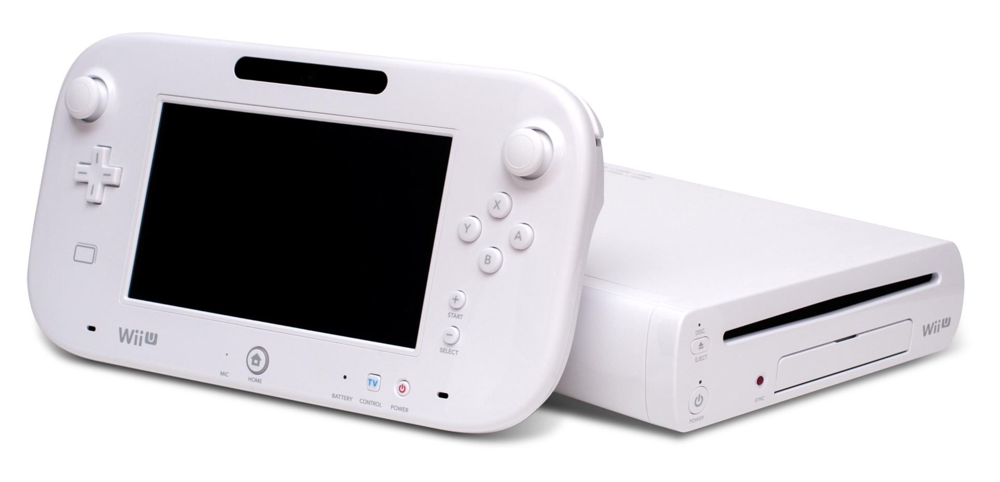

Восьмое поколение игровых приставок берёт своё начало
после выхода 27 марта 2011 года портативной консоли Nintendo 3DS.
Самыми доминирующими консолями были Playstation 4 и Xbox One
В июне 2011 года Nintendo объявила о том, что занимается разработкой преемника Wii — Wii U.
Многие журналисты позиционируют Wii U как первую домашнюю консоль восьмого поколения.
Анонс преемников Xbox 360 и PlayStation 3 состоялся весной, а также на выставке E3 в 2013 году;
Microsoft представила Xbox One, Sony — PlayStation 4. В 2012 году вышла Wii U.
А осенью 2013 года вышли Xbox One и PlayStation 4.
(2012—2020) 